Time Zone +13:00 by Eufrosyne (code and
design suckho, graphics and end music duke, music dune/orange;
HALKOJA.NFO), released at Juhla IVb, Raahe, 7-9.3.1997. The
NFO says the whole demo "except voxel routine" was made in two weeks and
that it targets a 120 MHz Pentium. TZ1300.EXE is an MZ stub
+ PMODE/W 1.32 + an uncompressed LE image (Watcom C + hand-written asm,
MIDAS Sound System 0.5.0), the music is two Scream Tracker modules
(AUMAX.S3M, then PILIPS.S3M for the ending)
and all art is in one container, TZ1300.DAT. Duration 256.7
s, 9 scenes. Everything below was read from the disassembly
(re/obj1.bin, re/dis.sh) and checked against
the JavaScript port in web/fx/; "bit-exact" always means "0
differing pixels against the Unicorn oracle over the frames the oracle
recorded" (section 7 says what that does and does not cover). The
companion file WRITEUP-asm.md has the disassembly
excerpts.
Figures are in figures/
(node tools/make_figures.mjs && python3 -I tools/make_figures.py
rebuilds them from the port; the screenshots are the port at the times
given in the captions).
0x337210) or straight into 0xA0000 and the
palette is rewritten every timer tick.n,
not of the music. MIDAS reprograms the PIT (reload 16951 =
70.39 Hz) and the timer callback increments
n ([0x231f88]); effects read it once or twice
per frame. The music only decides when a scene ends (S3M
order/row polled by the same callback) and when the fade/flash events
fire.0x100000..0x10e000 of the listing):
floating point is used only at start-up (sin/cos tables, atan2/sqrt
tables, landscape tables) through Watcom's runtime.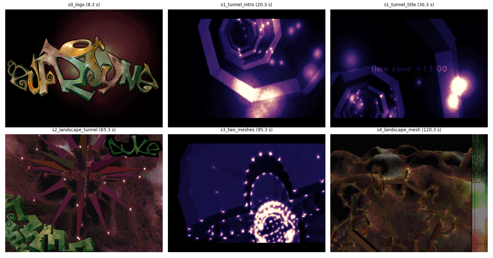
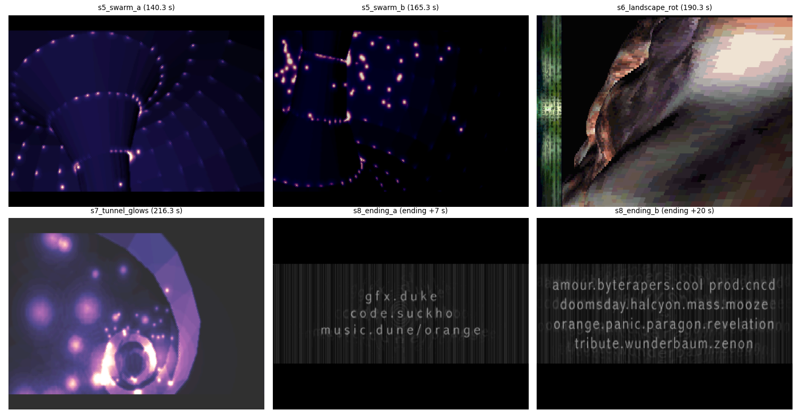
AUMAX: speed 6 / tempo 144 and never changes, so 1 row = 0.10417 s, 1
order = 64 rows = 6.667 s, 233.3 s in all (the S3M references patterns
that do not exist; they play as 64 empty rows). Each scene function
loops until the S3M position
(order [0x231f84], row [0x231f7c]), polled by
0x100340, reaches its end values; the seconds are
order*6.667 + row*0.10417 (web/timetable.js,
re/s3mtime.py).
| # | function | starts at (order,row) | seconds | content | state in the port |
|---|---|---|---|---|---|
| 0 | 0x109760 |
0,0 (black until the fade-in at 0,58) | 0 | Eufrosyne logo (DAT image 7) | exact |
| 1 | 0x102b90 |
2,12 | 14.58 | octagonal tunnel + 64 glow particles, title "time zone +13:00" from order 4 | exact per tick |
| 2 | 0x107e10 |
8,0 | 53.33 | polar landscape tunnel + star mesh + overlay + 3 credit strips | exact per tick pair |
| 3 | 0x1029b0 |
12,0 | 80.00 | big shell mesh + point sphere, swinging camera | exact per tick |
| 4 | 0x108250 |
16,0 | 106.67 | landscape fly-over + mesh + overlay | exact given the history |
| 5 | 0x102650 |
20,0 | 133.33 | 192-point swarm around an attractor, mesh in the middle | exact given the step counts |
| 6 | 0x108530 |
26,0 | 173.33 | landscape fly-over rotated 90 degrees + overlay | exact given the history |
| 7 | 0x102e90 |
30,32 | 203.33 | second tunnel mesh + 64 glows | exact per tick |
| 8 | 0x1097f0 |
PILIPS 0,0 | 228.33 | ending: two credit images cross-faded + noise streaks | exact given the history |
| - | end | PILIPS 4,16 | 256.67 |
(Scene numbers are the port's web/fx/fxNN.js. Scene 7
ends at AUMAX (34,16) = 228.33 s: the original then stops AUMAX, loads
PILIPS and runs the ending for 28.33 s.)
Frame cost seen in the Unicorn harness (20 ns per instruction, about
a 50 MIPS machine; the harness clock runs at 70.4 ticks/s): scene 1 6.8
ticks/frame, 2 6.0, 3 7.7, 4 5.5, 5 6.4, 6 2.3, 7 6.5, ending 2.7.
README.md explains why the player uses K = 2, 2, 1, 1 ticks
per frame for scenes 4, 5, 6 and the ending.
Music/clock caveat. With no sound card MIDAS steps
the module once per timer tick assuming exactly 70 Hz, so the harness
music runs 70.39/70 = 0.56 % fast against the nominal tempo and the
oracle's "tick n" is 70 t + 8.75. The player uses nominal
music time and n = 7 + 70.39 t; the offset is arbitrary (it
is the load time on a real machine).
0x100370)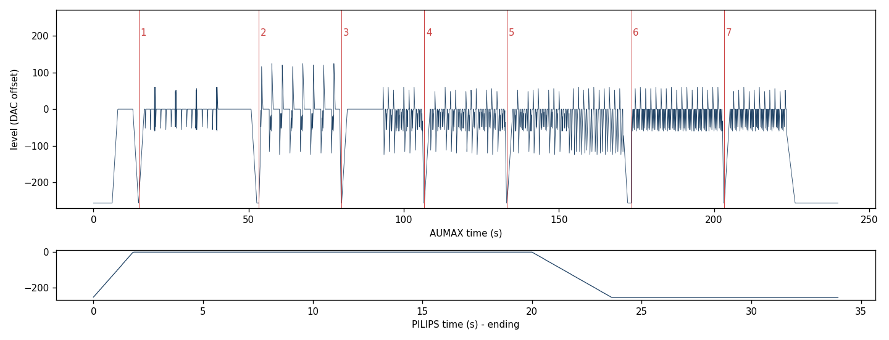
The timer interrupt calls 0x100370 on every tick (70.39
Hz): n++, poll the S3M position, then run a small state
machine on a command cmd ([0x231f70]) and a
level ([0x231f74], -256..0, 0 = no
change). The same tick uploads the palette (0x100a00):
DAC[i] = clamp(pal[i] + level, 0, 255) >> 2 on all
three channels. One scalar added to every channel means a negative level
fades towards black and a positive level flashes towards white, with the
same code.
| cmd | per tick | used for |
|---|---|---|
| 0 | level moves 4 towards 0 | hold, and the decay of a beat flash |
| 1 | +2 until above 0, then level 0 and cmd 0 | fade in from black (128 ticks = 1.8 s) |
| 2 | -2 down to -256 | slow fade out |
| 3 | -8 down to -256 | fast fade out (0.45 s) |
| 4 | -1 down to -256 | very slow fade out (final) |
| 5 | +1 up to 0 | implemented, no event uses it |
Events fire once when (order,row) changes to a listed
value (reset = level forced to -256 first). AUMAX: (0,58)
in+reset; (1,58) cmd 2; (2,12) in+reset; (7,40) cmd 2; (8,0) cmd 0;
(11,58) cmd 3; (12,0) in+reset; (15,58) cmd 3; (16,0) in+reset; (19,58)
cmd 3; (20,0) in+reset; (25,40) cmd 2; (26,0) cmd 0+reset; (30,26) cmd
3; (30,32) in+reset; (33,32) cmd 4. PILIPS: (0,0) in+reset; (3,0) cmd 4.
So the logo is shown black until 6.04 s, scenes 2..7 each start from
black with a fade in, and scene 2 comes back from the black left by the
slow fade of (7,40) through cmd 0 at (8,0) (+4/tick, 0.9 s); scene 6
does the same at (26,0).
W sync commands. 416 S3M W
effects in AUMAX (info 0x10..0x14) call the MIDAS sync callback
0x100910 from the player: only when cmd =
0, info 0x10 sets the level to +0x80, 0x11 to -0x80, 0x12 to
+0x40, 0x13 to -0x40 (0x14 is ignored). The decay of cmd 0 (4/tick) then
turns each of them into a 0.2-0.45 s flash to white or dip to black on
the beat. That is the pulsing you see in the tunnel scenes.
Port: web/fx/fade.js runs the same machine on a tick
grid (web/fx/sync.js = the 416 W commands, extracted by
re/mk_sync.py). Approximated: the W flash
lands about 0.5 tick before the row boundary the events use (fitted
constant SYNC_LEAD), and the tick phase is fitted. Over the
whole Unicorn run (tools/fxcheck_fade.mjs): AUMAX 11157 of
15994 timer records exact, 4577 within one tick (4 DAC units), 260
worse; PILIPS 1603 / 262 / 126 of 1991. The "worse" ones are flash edges
one tick off and the first ~60 ticks of the ending.
web/fx/engine3d.js)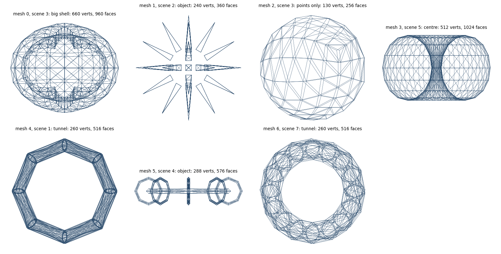
Tables. sin/cos are 4096
entries of int(sin(a) * 32768) (truncated),
a += 0.001533980788085938 (= 3.141592654 / 2048, the
author's pi; 0x102570, tables at 0x333210 and
0x300110). Every angle is an index
& 0xfff; the animations are linear combinations such as
sin[5n], sin[9n], so each scene is a Lissajous
of the tick. Math.sin/Math.cos reproduce the
integer tables exactly (tools/checksin.mjs).
Objects. A scene is a table
count, camera{x,y,z,rx,ry,rz}, objects[] with 32-byte
objects (x,y,z, rx,ry,rz, scale, mesh byte at +0x1c, type byte at
+0x1e). 0x1024a0 walks it and dispatches on the type:
| type | object | emits |
|---|---|---|
| 4 | point | 16x16 additive spot (sprite sampled every 8th texel,
src*8) |
| 9 | point | 16x16 spot, src*2 - size, size grows with distance |
| 5 | point | scaled 128x128 additive glow, size 0x100 - d/64 + 0x20
clamped 0x10..0xff |
| 14 | point | same glow, size from d/128 (the attractor of scene
5) |
| 1, 3 | mesh | flat triangles >>17, no depth cue (3 also emits a
spot per visible vertex, src*8) |
| 2 | mesh | only the spot per visible vertex |
| 6, 8 | mesh | flat triangles >>17 with depth cue (8 also emits
a type-7 spot per vertex) |
| 10, 11 | mesh | triangles >>16 + 0x28 bias, depth cue |
| 12, 13 | mesh | triangles >>16, depth cue |
Transform. Mesh (0x100ae0): build the
object's 3x3 rotation (z, x, y), combine with the camera rotation (z, x,
y) one column at a time, scale by obj.scale >> 8;
vertex = column combination;
depth = (acc/2 + camZ<<12) >> 8,
screen = (acc/2 + cam<<12) / depth + (160, 100).
Points (0x102060) do the same for one vertex. All matrix
products are (a*b +- c*d) >> 15 with the
truncating signed shift (see asm section 1). A face needs depth
> 0 on all three vertices, one vertex on screen, and must be
back-face culled by (ya-yc)(xa-xb) < (xa-xc)(ya-yb).
Shade =
-(camera-z row . face normal) >> 16 (or 17) plus the
bias and a depth cue (sum of depths - 0x40000) / 4096,
clamped to 0..0xbf. The per-face normals are precomputed in the
mesh (arrays 13..15); mesh 6's normal-z array runs 0x80 bytes past
the end of the mesh in the original, and the port includes those
bytes.
Render list. Every triangle/spot/glow becomes a
64-byte entry at 0x235e58 (x1,y1,x2,y2,x3,y3 at +0..0x14,
key +0x18, shade or size +0x1c, entry type +0x20, key = sum of vertex
depths or 3d). A 32-pass binary radix sort
(0x107a78) sorts the key ascending, the draw loop walks it
far to near (painter's algorithm).
Rasterisers. Flat triangle 0x1036ff
(fast path when every vertex is inside, else per-pixel clip), glow
0x107937 (scaled 128x128 sprite), spots
0x1077dc/0x107889 (16x16). All writes go to a
320x200 byte buffer as dst = min(src*k + dst, 0xbf) for
sprites (additive, saturating at 0xbf) and plain shade stores for
triangles. Palette indices stay below 0xc0 on purpose:
the top 64 entries belong to the overlays that scenes 2, 4, 6 paint with
+0xc0.
Post. Scenes 1, 3, 5, 7 finish with a 4-tap blur
written straight to VGA:
out[i] = (b[i-1] + b[i+1] + b[i-320] + b[i+320]) >> 2
for i in 0x1400..0xe5ff (rows 16..183; the
rest of the screen stays black, hence the letterbox bands). The glow
sprite (a soft round blob), the tunnel mesh and the star ramp palette
(DAT image 12) are the whole visual vocabulary of these scenes.
0x109760, 0-14.58 s)DAT image 7 (the Eufrosyne graffiti logo, 320x200) copied to VGA
every frame; only the palette moves: black until (0,58), fade in, W
flashes on the beat, fade out at (1,58), black until scene 1.
Exact: pixels in all 1727 oracle frames, DAC equal
given the original's own fade level
(tools/fxcheck00.mjs).
0x102b90, 14.58-53.33
s)Object table of 65 objects: object 0 is the tunnel mesh
4 (type 10, 260 vertices, 516 faces: an octagonal ring extruded
along y, scale 1024), objects 1..64 are type-5 glow
particles. Per frame, with n read once at the
start:
x = sin[5n]/128, z = sin[3n]/128,
y = -((n<<5) & 0x1fff) (flying
down the tunnel; the wrap period 0x2000 is presumably the mesh length,
there is no visible jump), rotation
rx = sin[9n]/0xc0 - 0x400, ry = sin[4n]/0xc0,
rz = sin[7n]/0xc0;x = sin[11n + 0x543 k]/128,
y = sin[9n + 0x210f k]/32 + camY - 1000,
z = sin[6n + 0xa56 k]/128, each one a different phase of
the same three sines;v = max(img - d, 0) + buf (clamped 0xbf) with
d = sin[((n>>1) + 0x500)] / 128 + 0xd0, so the text
is subtracted by a slowly pulsing offset (d runs from -48
to 464) and fades in and out; the tick is read a second time at this
point;Exact for a given tick: 402 of 402 oracle frames
(0..53 s) identical, DAC identical (tools/fxcheck01.mjs).
Exactness is per tick value: the oracle only records n at
the end of the frame, so the checker searches the n that
reproduces each frame; each one found one.
Approximated: which n the player uses at a
music time (n = 7 + 70.39 t) and the frame rate (the player
draws at the display rate).
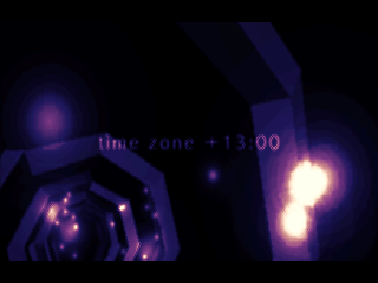
0x107e10, 53.33-80 s)Two 2D effects and one 3D object:
k = 0..0x60 the height map (DAT image 8) at
((n + k) & 255) + 256 x gives a screen limit
T[k][h] = max(0, h*32/(k+1) - 10) and the slice's texel
(DAT image 11) fills the column from the bottom up to it while it is
higher than anything nearer (a voxel-style column painter with
occlusion). The screen is then read in polar
coordinates from that map:
screen(x,y) = work[ D(x,y) << 8 | (A(x,y) + (sin[8n] >> 9)) & 255 ],
D = int(sqrt(x^2+y^2)),
A = int(atan2(y,x) * 256/2pi) from tables built at start-up
(0x107ce0). A flat landscape seen from inside a tube,
twisting with sin[8n].6n, 7n, 5n, position
sin[6n]/64, sin[5n]/64, sin[9n]/64. It uses the tick read
at the end of the previous frame (first frame: at rest).+0xc0 palette) and three credit strips
(DAT image 2, 3 x 42 rows: suckho, duke, dune) shown at
(8,0x21)-(9,0x1f), (9,0x21)-(10,0x1f), (10,0x21)-(11,0x1f).Exact for a given tick pair (311 of 311 frames;
strips read the row one record earlier in rare frames). The table of
atan2 needed care: the original multiplies by the double
0x3fc45f306dbe5bcd (0.15915494307111, slightly below 1/2pi)
after * 256, which differs from the exact
256/2pi on 757 of the 64000 entries (exact multiples of 32
for negative angles); the port uses an equivalent constant (0
differences against the emulator's table).
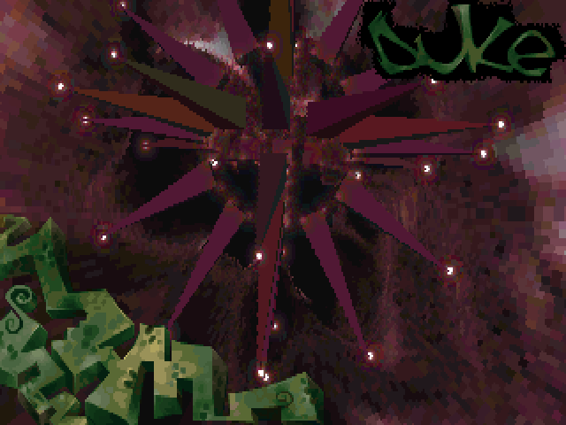
0x1029b0, 80-106.67 s)No particles: mesh 0 (660 vertices, 960 faces, type
3: a big dark shell, scale 2048, ry = 2n) and mesh
2 (130 vertices, type 2: only the additive spots of its
vertices, rotating 4n, 5n, 3n with a pulsing scale
sin[32n]/128 + 0x300) inside it; the camera swings:
x = -1024, y = sin[4n]/16 - 0x1800,
rx = sin[13n + 0x800]/512,
ry = sin[16n + 0x800]/256 + 0x400,
rz = sin[11n + 0x800]/256 - 0x300. Blur. A pure function of
n: exact, 241 of 241 frames.
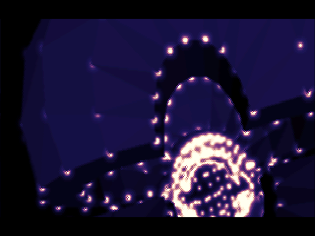
0x108250, 106.67-133.33
s)The classic height-map landscape painter (the "voxel
routine", which the NFO excepts from the two weeks the rest took, so
probably older code), 0x108d78, texture DAT image 9, height
map image 8, plus mesh 5 (288 vertices, type 8, scale 192) and the
overlay DAT image 5 (the vertical bar with the crosshair on the right
edge).
n: each frame the
heading e = sin[4n]/128 + sin[7n]/256 + 0x280 (mod 0x500)
is computed, and the position accumulators advance
B -= 2 sin[e*4096/0x500], C += 2 cos[...]. The
painter of the next frame gets (e, B, C), so the
flight depends on the frame cadence (factor 2 here, 1 in scene 6).L = 0x91..1) and for each one 128
samples along a ray whose three increments (u step, v step,
distance step) are cos[2L], sin[esi + 2L],
cos[esi + 2L] (tables
sin/cos(0.7953981635 - i*2pi/1280) * 65536 truncated, built
at 0x108100) and grow by half of their start value
every 32 samples (perspective). Each sample gives a texture
address and a distance row; the height map selects a division
table entry (0x640 + 0x20 row) / c = the screen
row up to which this sample's texel is painted (from the bottom up,
never over an already-painted pixel).Exact given the original's frame history (341 of 341 frames); the port replays from the scene start with K = 2 ticks per frame, which is an assumption (README, Cadence).
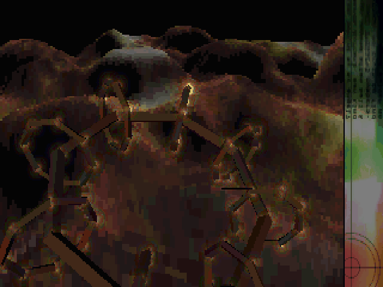
0x102650, 133.33-173.33 s)Object 0 is mesh 3 (512 vertices, type 3, scale 320: the dark
"hourglass"), object 1 a type-14 glow attractor at
(cos[7n]/64, sin[23n]/128, sin[7n]/64) and objects 2..193
are 192 type-4 points. The points are a simulation:
start positions from 5 rand() calls each (Watcom LCG
seed*0x41c64e6d + 0x3039,
(seed>>16)&0x7fff, seed 1):
x = cos[r1 & 0xfff] / ((r2 >> 10) + 0x30),
y = (r3 >> 5) - 0x200,
z = sin[r4 & 0xfff] / ((r5 >> 10) + 0x30),
velocity 0; then per elapsed timer tick
v += (target - p) >> 9, p += v (a spring
towards the attractor, integer and truncating). The camera orbits
(-cos[4n-0x400]/32, 0, sin[4n-0x400]/32). The simulation
steps once per elapsed tick between two reads of the timer, so
a slow machine takes bigger steps per frame and the positions depend on
the history, not on n alone.
Exact (440 of 440 frames) when fed the original's
steps per frame (re/m5.json, read from the original's
object table by re/dump5.py: every consecutive pair of
tables is reproduced exactly by m repeated steps, m =
5..9). The player's cadence is an assumption (K = 2 ticks per
frame).
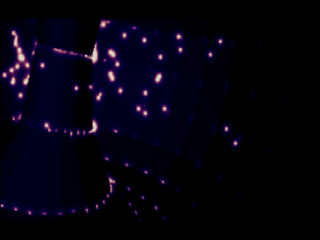
0x108530, 173.33-203.33 s)The same painter turned 90 degrees (0x108ec1: columns
become horizontal 2-px bands painted right to left), texture DAT image
10, the left-edge bar of DAT image 4 as overlay, no 3D object, no blur.
The heading is sin[2n]/64 + sin[5n]/256 + 0x280 and the
step is 1 (not 2) per frame. Exact given the history
(914 of 914 frames).
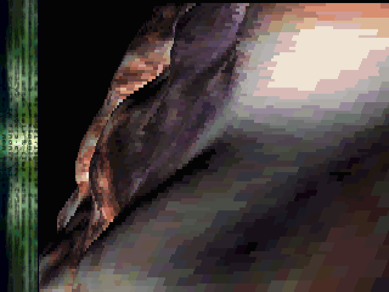
0x102e90, 203.33-228.33 s)Scene 1's engine with other numbers: mesh 6 (260
vertices, type 12, another tunnel mesh: a ring of overlapping tubes in
the wire view) and 64 type-5 glows
(x = sin[14n + 0x543k]/128,
y = sin[11n + 0x210fk]/32 + camY - 1000,
z = sin[9n + 0xa56k]/128), camera
x = sin[9n]/0xc0, y = -((48n) & 0x1fff),
z = sin[6n]/0xc0, rx = sin[11n]/128 - 0x400,
ry = sin[7n]/0xc0, rz = sin[9n]/0xc0, blur.
Scene 6 fades out at (30,26) (cmd 3) and this scene fades in at (30,32).
A pure function of n: exact, 268 of 268
frames. The oracle found a bug that is worth knowing: mesh 6's normal
arrays run past the end of the mesh, so the original reads 0x80 bytes of
whatever follows.
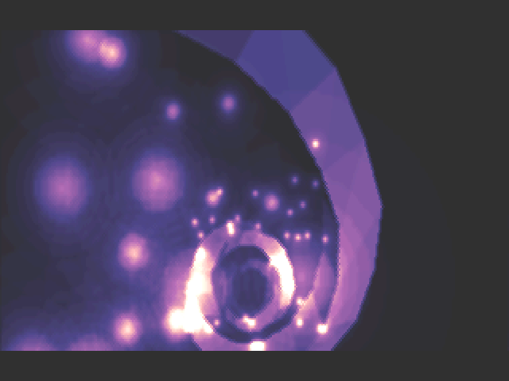
0x1097f0, PILIPS 0-28.33 s)Two DAT credit images (0: "gfx.duke code.suckho music.dune/orange",
1: the greetings list) in rows 48..191, cross-faded by a sine: with
e = (sin[2n + 0x100] >> 9) + 0x40,
out = max(0, img1/2 - e) + max(0, img0/2 - (0x80 - e)) (the
two images trade brightness as e oscillates, each fading by
subtraction of an offset in a shared grey ramp). On top,
noise streaks: three rand() per frame seed
a four-accumulator generator (asm section 12) that adds
(bx & 0x1f) + 0xc to every pixel, giving the vertical
grain. PILIPS fades in at (0,0) and out with cmd 4 at (3,0).
n counts ticks since the ending started and is read three
times per frame (blend 0x109872, noise
0x1098fc, 0x109905; ticks pass while the blend
runs). The rand state continues from scene 5, which consumed 960 calls
(192 x 5) before: seed 1 is verified by the exact ending (726 of 726
frames).
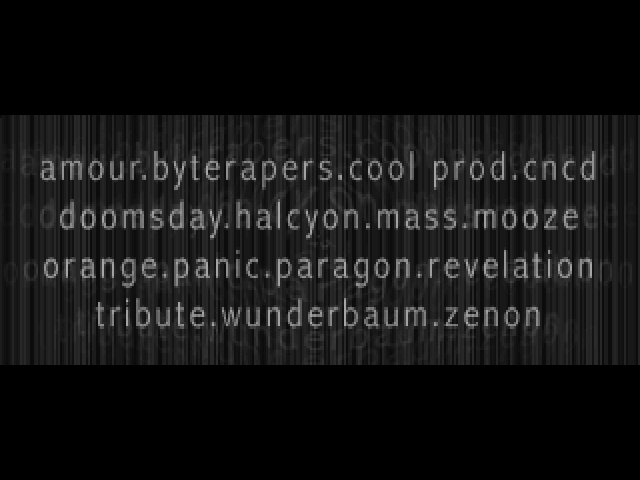
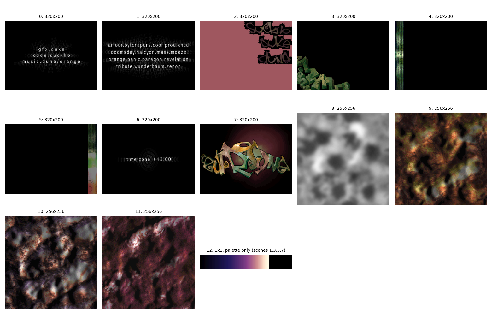
13 concatenated "mhwanh" images (32-byte big-endian header: version
4, width, height, 256; then a 768-byte palette with 8-bit values used
>>2 for the DAC; then width*height indices). The
original reads slices into fixed addresses at start-up
(0x109070; the port's MEM table in
web/fx/dat.js is compared equal to the memory dump).
Palettes are composed: scenes 2, 4, 6 take the first 192
colours (0x240 bytes) of the texture image and the first 64 of the
overlay image at index 0xc0.
| image | size | used by |
|---|---|---|
| 0, 1 | 320x200 | ending (credits, greetings) |
| 2 | 320x200 | three credit strips of scene 2 (3 x 42 rows) |
| 3 | 320x200 | scene 2 overlay (green block letters) |
| 4, 5 | 320x200 | scene 6 / scene 4 overlay (bar with a crosshair, at the left / right edge) |
| 6 | 320x200 | scene 1 title "time zone +13:00" |
| 7 | 320x200 | logo |
| 8 | 256x256 | height map of scenes 2, 4, 6 |
| 9, 10, 11 | 256x256 | landscape textures of scenes 4, 6, 2 |
| 12 | 1x1 | palette only: the purple-to-cream ramp of scenes 1, 3, 5, 7 |
The 7 meshes live in the data object
(0x203838..0x22e9b8, pointer table 0x260de8)
and are extracted by re/mk_assets3d.py
(web/assets/tz13_mesh.bin, tz13_3d.bin).
Header [nv, nf, byte offsets...]: x, y, z arrays, face
indices a, b, c, face normals.
web/player.js (canvas 2D, 4:3, pause + seek + scene
buttons, libopenmpt music with AUMAX swapped for PILIPS at 3:48),
web/timetable.js, one web/fx/fxNN.js per scene
(init(), render(t, ctx)),
engine3d.js, terrain.js (the two painters),
fade.js, dat.js. Scenes that are pure
functions of n seek instantly; scenes 4, 5, 6 and the
ending replay their state from the scene start (fixed K), so a seek is
repeatable (tools/uitest.mjs).
fade.js, sections 2 and 7 of README: 98 % of timer records
within one tick); (2) the mapping music time -> tick
(n = 7 + 70.39 t, arbitrary offset); (3) the frame cadence
of scenes 4, 5, 6 and the ending (K = 2, 2, 1, 1 ticks per frame, an
assumption about a 1997 Pentium), which changes the exact landscape
position and the exact particle positions you see, not the look; (4) the
original's frame rate for scenes 1, 2, 3, 7 (the player draws at the
display refresh).(order,row) the original
waits for, converted to seconds with the constant S3M tempo.